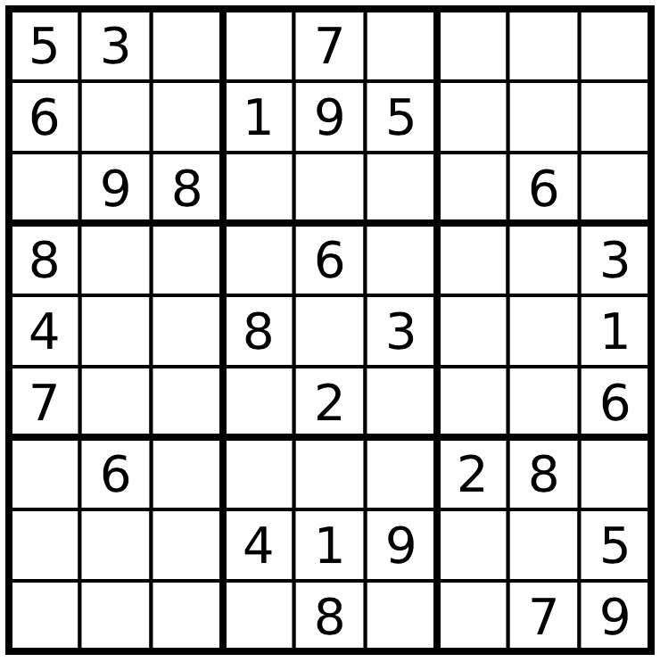
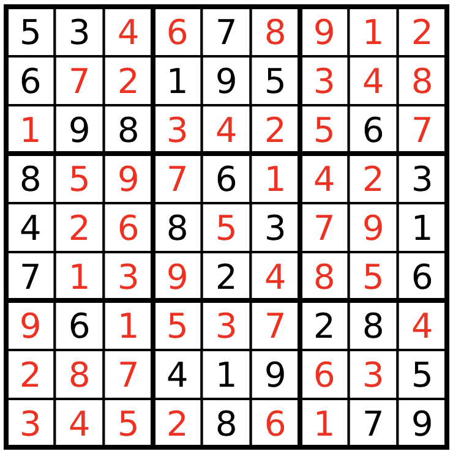

Sudoku
This tutorial was generated using Literate.jl. Download the source as a .jl file.
This tutorial was originally contributed by Iain Dunning.
This tutorial models Sudoku as both a binary integer program and a constraint programming problem in JuMP, and solves both formulations with HiGHS. Sudoku is a pure feasibility problem: the goal is to place the digits 1-9 on a 9×9 grid such that each digit appears exactly once in every row, column, and 3×3 sub-grid.
Learning intentions:
- Formulate Sudoku as a binary integer program with a 9×9×9 variable grid, and encode cell, row, column, and sub-grid uniqueness as linear constraints
- Recognize Sudoku as a feasibility problem with no objective, fix the given digits using
fix, and extract the solution by rounding - Re-formulate the same puzzle using the
MOI.AllDifferentconstraint programming set and verify that both formulations give the same answer
Required packages
This tutorial uses the following packages:
using JuMPimport HiGHSMixed-integer linear programming formulation
Here is a partially solved Sudoku problem:

We can model this problem using 0-1 integer programming: a problem where all the decision variables are binary. We'll use JuMP to create the model, and then we can solve it with any integer programming solver.
We will define a binary variable (a variable that is either 0 or 1) for each possible number in each possible cell. The meaning of each variable is as follows: x[i,j,k] = 1 if and only if cell (i,j) has number k, where i is the row and j is the column.
Create a model
sudoku = Model(HiGHS.Optimizer)set_silent(sudoku)Create our variables
@variable(sudoku, x[i=1:9, j=1:9, k=1:9], Bin);Now we can begin to add our constraints. We'll actually start with something obvious to us as humans, but what we need to enforce: that there can be only one number per cell.
for i in 1:9 # For each row for j in 1:9 # and each column # Sum across all the possible digits. One and only one of the digits # can be in this cell, so the sum must be equal to one. @constraint(sudoku, sum(x[i, j, k] for k in 1:9) == 1) endendNext we'll add the constraints for the rows and the columns. These constraints are all very similar, so much so that we can actually add them at the same time.
for ind in 1:9 # Each row, OR each column for k in 1:9 # Each digit # Sum across columns (j) - row constraint @constraint(sudoku, sum(x[ind, j, k] for j in 1:9) == 1) # Sum across rows (i) - column constraint @constraint(sudoku, sum(x[i, ind, k] for i in 1:9) == 1) endendFinally, we have the to enforce the constraint that each digit appears once in each of the nine 3x3 sub-grids. Our strategy will be to index over the top-left corners of each 3x3 square with for loops, then sum over the squares.
for i in 1:3:7 for j in 1:3:7 for k in 1:9 # i is the top left row, j is the top left column. # We'll sum from i to i+2, for example, i=4, r=4, 5, 6. @constraint( sudoku, sum(x[r, c, k] for r in i:(i+2), c in j:(j+2)) == 1 ) end endendThe final step is to add the initial solution as a set of constraints. We'll solve the problem that is in the picture at the start of the tutorial. We'll put a 0 if there is no digit in that location.
The given digits
init_sol = [ 5 3 0 0 7 0 0 0 0 6 0 0 1 9 5 0 0 0 0 9 8 0 0 0 0 6 0 8 0 0 0 6 0 0 0 3 4 0 0 8 0 3 0 0 1 7 0 0 0 2 0 0 0 6 0 6 0 0 0 0 2 8 0 0 0 0 4 1 9 0 0 5 0 0 0 0 8 0 0 7 9]for i in 1:9 for j in 1:9 # If the space isn't empty if init_sol[i, j] != 0 # Then the corresponding variable for that digit and location must # be 1. fix(x[i, j, init_sol[i, j]], 1; force = true) end endendsolve problem
optimize!(sudoku)assert_is_solved_and_feasible(sudoku)Extract the values of x
x_val = value.(x);Create a matrix to store the solution
sol = zeros(Int, 9, 9) # 9x9 matrix of integersfor i in 1:9 for j in 1:9 for k in 1:9 # Integer programs are solved as a series of linear programs so the # values might not be precisely 0 and 1. We can round them to # the nearest integer to make it easier. if round(Int, x_val[i, j, k]) == 1 sol[i, j] = k end end endendDisplay the solution
sol9×9 Matrix{Int64}:
5 3 4 6 7 8 9 1 2
6 7 2 1 9 5 3 4 8
1 9 8 3 4 2 5 6 7
8 5 9 7 6 1 4 2 3
4 2 6 8 5 3 7 9 1
7 1 3 9 2 4 8 5 6
9 6 1 5 3 7 2 8 4
2 8 7 4 1 9 6 3 5
3 4 5 2 8 6 1 7 9Which is the correct solution:

Constraint programming formulation
We can also model this problem using constraint programming and the all-different constraint, which says that no two elements of a vector can take the same value.
Because of the reformulation system in MathOptInterface, we can still solve this problem using HiGHS.
model = Model(HiGHS.Optimizer)set_silent(model)# HiGHS v1.2 has a bug in presolve which causes the problem to be classified as# infeasible.set_attribute(model, "presolve", "off")Instead of the binary variables, we directly define a 9x9 grid of integer values between 1 and 9:
@variable(model, 1 <= x[1:9, 1:9] <= 9, Int);Then, we enforce that the values in each row must be all-different:
@constraint(model, [i = 1:9], x[i, :] in MOI.AllDifferent(9));That the values in each column must be all-different:
@constraint(model, [j = 1:9], x[:, j] in MOI.AllDifferent(9));And that the values in each 3x3 sub-grid must be all-different:
for i in (0, 3, 6), j in (0, 3, 6) @constraint(model, vec(x[i .+ (1:3), j .+ (1:3)]) in MOI.AllDifferent(9))endFinally, as before we set the initial solution and optimize:
for i in 1:9, j in 1:9 if init_sol[i, j] != 0 fix(x[i, j], init_sol[i, j]; force = true) endendoptimize!(model)assert_is_solved_and_feasible(model)Display the solution
csp_sol = round.(Int, value.(x))9×9 Matrix{Int64}:
5 3 4 6 7 8 9 1 2
6 7 2 1 9 5 3 4 8
1 9 8 3 4 2 5 6 7
8 5 9 7 6 1 4 2 3
4 2 6 8 5 3 7 9 1
7 1 3 9 2 4 8 5 6
9 6 1 5 3 7 2 8 4
2 8 7 4 1 9 6 3 5
3 4 5 2 8 6 1 7 9Which is the same as we found before:
sol == csp_soltrue